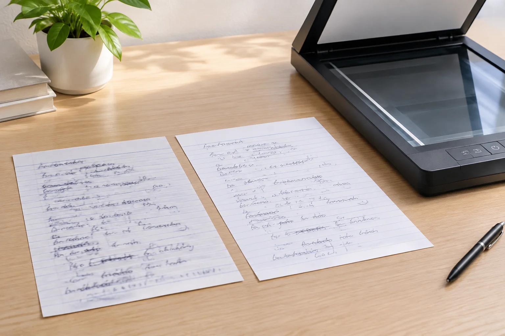

南京笔迹鉴定材料扫描后被自动锐化，细节更清楚了吗
锐化让边缘看起来更硬，阅读感受可能改善，但这不等于增加了原稿信息。处理方式需要与图像来源一起说明。

先找未经处理版本
南京笔迹鉴定资料若由扫描软件导出，可询问是否保留默认处理前的文件。锐化可能加强边缘，也可能放大纸纹和压缩痕迹。画面看着干净不代表细线更完整，尤其是浅墨与交叉处，应对照原图检查，不根据单一处理图直接解释用笔轻重。图像中出现细小白边或黑边，可能与增强有关。可以把具体位置列出来等待核查，不要仅依据这种边缘外观推断纸上曾经重描。
不同内容分别观察
模仿笔迹长文需要保留整体布局，模仿签名、模仿签字则常在很小区域里集中连接。局部放大能帮助定位，却也会放大处理痕迹。整页、局部及处理副本注明关系，不把同一照片锐化两次后的版本算成另一份自然样本。
保存步骤不用猜参数
能确认的处理方式写在目录里，软件参数不记得也可以注明未知。不要为显得资料完整而补造扫描分辨率或锐化强度。后续有机会补到可靠原件扫描时，再核对当前看见的边缘现象；清楚说明局限，比反复增强同一张图更有实际意义。